3. Myndræn framsetning
Myndræn framsetning er gífurlega mikilvæg á öllum stigum tölfræðiúrvinnslu. Með nokkrum gröfum má fljótt fá tilfinningu fyrir gögnum og því mælum alltaf með því fljótlega eftir innlestur gagna áður en lengra er haldið með frekari tölfræðiúrvinnslu. Sömuleiðis eru gröf oft og tíðum einstaklega heppileg til að setja fram niðurstöður rannsókna og að lokum gegna þau einnig mikilvægu hlutverki við að kanna hvort forsendur ýmissa tölfræðiprófa séu uppfylltar.
Í grunnpakkanum sem fylgir R má finna ýmsar aðferðir til að búa til gröf
(t.d. plot(), barplot(), boxplot() og histogram()). Þær
eru mjög auðveldar í notkun en gröfin sem þær skila eru ekki sérlega
fögur. Það hefur færst mikið í vöxt að R-notendur noti aðferðir sem
tilheyra pakka sem kallast ggplot2 til að búa til gröf. Með honum má
útbúa yndisfögur gröf og er hann umfjöllunarefni þessa kafla.
Ólíkt því sem gengur og gerist munum við einungis nota eina aðferð
ggplot() en með henni fylgja ótalmargar viðbætur sem gera okkur
kleift að teikna fjölbreytt gröf.
3.1. ggplot()
Athugið
Inntak: nafn á gagnatöflu og nöfn á aðalbreytum grafsins
Úttak: graf
Helstu stillingar: ótalmargar!
Skipunin ggplot() er ætíð mötuð á sama hátt. Fyrst kemur nafnið á
gagnatöflunni sem geymir gögnin, þá útlitsstillingin aes() og innan
hennar nöfnin á aðalbreytum grafsins. Þar fyrir aftan kemur viðbót sem
tilgreinir hvers konar graf skal teikna og einnig er hægt að bæta við
ótal fleiri viðbótum til að merkja og breyta ásum, lagskipta grafinu
eftir breytum og svo mætti lengi telja. Viðbætur bætast við með + í
stað þess að vera mataðar inn í fallið. Það mun sjást í hverju dæmi hér
fyrir neðan.
Í þessum kafla munum við teikna algengustu gerðir grafa með viðbótunum
geom_point(), geom_bar(), geom_histogram(), geom_boxplot og
stat_qq().
3.1.1. Algengustu gröf
3.1.1.1. Punktarit
Punktarit eru einföld og skýr leið til að setja fram gögn. Þau eru
smíðuð með viðbótinni + geom_point(). Eftirfarandi skipun gefur
okkur punktarit sem lýsir sambandi heildarlengdar og lengdar höfuðs pokarotta
í gagnatöflunni pokarotta. Skýribreytan heildarlengd er á x-ás og
svarbreytan hofud_lengd á y-ás, þær eru báðar tilgreindar inn í útlitsstillingunni aes().
ggplot(data=pokarotta, aes(x=heildarlengd,y=hofud_lengd)) + geom_point()
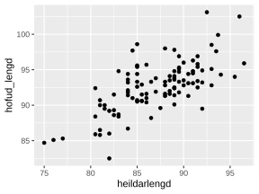
3.1.1.2. Stöplarit
Stöplarit eru tilgreind með viðbótinni geom_bar. Þar sem stöplarit
eru einungis notuð til að lýsa einni breytu er aðeins sú breyta
tilgreind inní aes().
ggplot(data=konnun, aes(x=is)) + geom_bar()
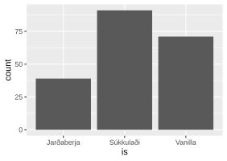
3.1.1.3. Stuðlarit
Viðbótin geom_histogram() teiknar stuðlarit. Viljum við teikna
stuðlarit af breytunni ferdatimi_skoli gerum við það með skipuninni:
ggplot(data=konnun, aes(x=ferdatimi_skoli)) + geom_histogram()
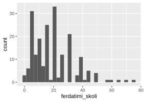
Stilla má breidd súlnanna með binwidth stillingunni:
ggplot(data=konnun, aes(x=ferdatimi_skoli)) + geom_histogram(binwidth=10)
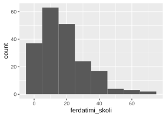
3.1.1.4. Kassarit
Kassarit eru mjög hentug til að bera saman dreifingu tveggja breyta. Þau
eru tilgreind með viðbótinni geom_boxplot(). Viljum við teikna
kassarit af breytunni systkini_fjoldi lagskipt eftir breytunni is gerum
við það með:
ggplot(data=konnun, aes(x=is, y=systkini_fjoldi)) + geom_boxplot()
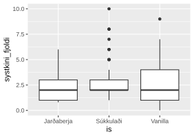
Hægt er að teikna kassarit af einni breytu án lagskiptingar með því að
setja factor(0) inn sem eins konar gervibreytu. Neðangreind skipun
teiknar kassarit af breytunni ferdatimi_skoli án lagskiptingar:
ggplot(data=konnun, aes(x=factor(0), y=ferdatimi_skoli)) + geom_boxplot()
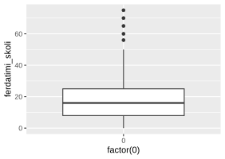
3.1.1.5. Normaldreifingarrit
Normaldreifingarrit eru gerð með viðbótinni stat_qq().
Normaldreifingarrit fyrir breytuna hofud_lengd fæst með:
ggplot(data=pokarotta, aes(sample=hofud_lengd)) + stat_qq()
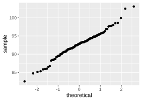
Takið eftir að nú stendur sample= í stað x= í aes()
stillingunni.
3.1.2. Ásar
3.1.2.1. Nöfn ása
Viðbætur má einnig nota til að merkja ása á gröfum. Viðbótin labs()
tilgreinir merkingu ása.
ggplot(data=konnun, aes(x=is)) + geom_bar()+labs(x="Uppáhalds ís", y="Fjöldi")
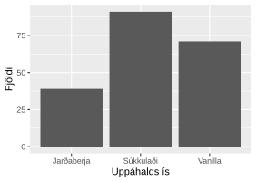
Við getum enn fremur merkt og stillt kvarðana á hvorum ás fyrir sig að
vild. Séum við að merkja samfellda breytu á x-ás notum við viðbótina
scale_x_continuous() en sé hún strjál notum við
scale_x_discrete(). Að sama skapi skiptum við x út fyrir y
ef við viljum merkja og stilla kvarðana á y-ás.
3.1.2.2. Nöfn kvarða
Til að breyta heitum á kvörðum mötum við stillinguna labels með þeim
heitum sem við viljum nota. Þannig merkjum við sem dæmi flokkana á
stöplaritinu hér að ofan með viðbótinni:
ggplot(data=konnun, aes(x=is)) + geom_bar()+labs(x="Uppáhalds ís", y="Fjöldi") +
scale_x_discrete(labels = c("Jarðaberjaís","Súkkulaðiís", "Vanilluís"))
Takið eftir einu til viðbótar. Hér skiptum við skipuninni upp í tvær línur til að gera kóðann læsilegri. Þá þurfum við að passa okkur að hafa plúsinn við enda línunnar. Ef plúsinn kemur í upphafi næstu línu er sú lína hunsuð og við fáum jafnvel villu:
ggplot(data = konnun, aes(is)) + geom_bar() + xlab('Uppáhalds ís') + ylab('Fjöldi')
+ scale_x_discrete(labels = c("Jarðaberjaís","Súkkulaðiís","Vanilluís"))
## Error in `+.gg`:
## ! Cannot use `+` with a single argument.
## ℹ Did you accidentally put `+` on a new line?
3.1.2.3. Hök kvarða
Að sama skapi má auðveldlega stilla hvar hök kvarðanna á x- og y-ás eru
með stillingunni breaks(). Viljum við sem dæmi láta merkingarnar á
y-ás í punktaritinu hér fyrir ofan hlaupa á hverjum 10 millimetrium í stað 5
gerum við það með skipuninni:
ggplot(data=pokarotta, aes(x=heildarlengd,y=hofud_lengd)) +
geom_point()+scale_y_continuous(breaks = seq(80,120,10))
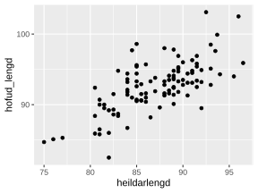
3.1.2.4. Mörk kvarða
Mörk kvarða eru stillt með viðbótunum xlim() og ylim(). Þær eru
mataðar með endamörkum kvarðanna.
ggplot(data=pokarotta, aes(x=heildarlengd,y=hofud_lengd)) +
geom_point()+ylim(50,120)+xlim(70,100)
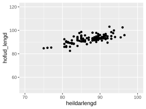
3.1.3. Litir og tákn
Litir og tákn eru góðar leið til að lagskipta gröfum. Í ggplot() eru
tvenns konar leiðir til að lita. Annars vegar með að lita punktana eða
línurnar á grafinu sjálfu en þá er notuð stillingin color. Hins
vegar má fylla upp í fleti á grafinu með stillingunni fill.
Stillingarnar eru tilgreindar inní útlitsstillingunni aes().
Við getum lagskipt punktaritinu yfir hæð og þyngd nemenda eftir kynjum
pokarotta með því að lita punktana ólíkt eftir því hvoru kyninu pokarotta
tilheyrir. Það er því gert með stillingunni color.
ggplot(data=pokarotta, aes(x=heildarlengd,y=hofud_lengd, color = kyn)) + geom_point()
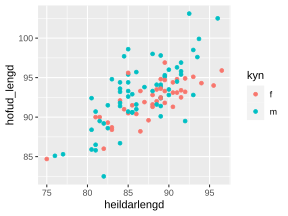
Viljum við hins vegar lagskipta stöplaritinu yfir uppáhalds ís nemenda
eftir því hvort þeir nota iOS eða Android gerum við það með
stillingunni fill, því þá viljum við lita fleti grafsins ólíkt.
ggplot(data=konnun, aes(x=is, fill=styrikerfi_simi)) + geom_bar()
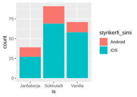
Ef við bætum stillingunni position=’dodge’ inní viðbótina
geom_bar() koma stöplar grafsins hvor við hliðina á öðrum:
ggplot(data=konnun, aes(x=is, fill=styrikerfi_simi)) + geom_bar(position="dodge")
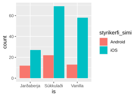
Oft eru tákn heppilegri en litir til að lagskipta gröfum. Til dæmis geta
litmyndir verið dýrar í tímaritum og svart-hvítar lausnir því heppilegri
kostur. Tilgreina má að skipta gröfum upp með því að nota ólík tákn með
því að nota shape á sama hátt og color var notað hér að ofan:
ggplot(data=pokarotta, aes(x=heildarlengd,y=hofud_lengd, shape = kyn)) + geom_point()
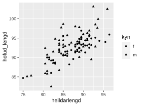
3.1.4. Gröfum skipt upp í reiti
Önnur góð leið til að lagskipta gröfum er með því að skipta þeim upp í
reiti. Það er gert með skipuninni facet_grid(). Hægt er að skipta
gröfunum hvort sem heldur eftir x-ás eða y-ás eða jafnvel báðum.
Viljum við skipta punktaritinu yfir lengd pokarotta og lengd hala þeirra upp eftir því hvaðan þær eru gerum við það með skipuninni:
ggplot(data=pokarotta, aes(x=heildarlengd,y=hofud_lengd)) + geom_point() +
facet_grid(~tegund)
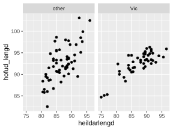
Viljum við skipta grafinu í reiti eftir bæði kyni pokarotta og hvaðan þær eru gerum við það með: Viljum við skipta grafinu í reiti eftir bæði kyni pokarotta og hvaðan þær eru gerum við það með:
kyntegund<-ggplot(data=pokarotta, aes(x=heildarlengd,y=hofud_lengd)) + geom_point() +
facet_grid(kyn~tegund)
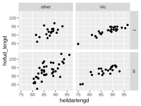
Svo mætti hæglega halda áfram og lagskipta með bæði reitaskiptingu og táknum í sama grafinu.
3.1.5. Skipt um bakgrunn
Grái, sjálfgefni, bakgrunnurinn á ggplot gröfum getur stundum verið
óviðeigandi og vilja margir hafa hvítan bakgrunn þess í stað. Til eru
tvær þægilegar stillingar til að breyta um bakgrunn. Sú fyrri er
theme_bw() og gefur þessa niðurstöðu:
ggplot(data=pokarotta, aes(x=heildarlengd,y=hofud_lengd)) + geom_point()
+ theme_bw()
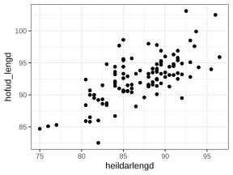
sú seinni er theme_classic() og gefur þessa niðurstöðu:
ggplot(data=pokarotta, aes(x=heildarlengd,y=hofud_lengd)) + geom_point()
+ theme_classic()
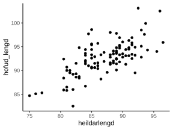
3.1.6. Myndir vistaðar
3.1.6.1. Myndir vistaðar
Til að geyma myndirnar sem við búum til, veljið Plots flipann í
neðra vinstra glugganum í RStudio myndina og veljið þar Export. Þar
má velja .pdf eða .jpg/.png/.eps skrá.
3.2. ggsave()
Athugið
Inntak: nafn grafsins
Inntak: vistað graf á því sniði sem er búið að tilgreina
Helstu stillingar: plot, width, height, dpi
Einnig vistar skipunin ggsave() það graf sem er á skjánum því sinni
undir því nafni sem þið gefið. Sú skipun er mjög handhæg t.d. þegar mörg
gröf eru teiknuð, þá eru engir músarsmellir nauðsynlegir. Skipunin hefur
m.a. stillinguna plot og þá vistar hún ekki grafið á skjánum, heldur
grafið sem er vistað undir því nafni sem við tilgreinum stillingunni. Ef
við viljum vista grafið á skjánum á .jpg sniði undir nafninu
graf gefum við skipunina:
ggsave('graf.jpg')
Ef við viljum vista grafið á .pdf sniði gefum við skipunina
ggsave('graf.pdf')
og ef við viljum ekki vista grafið á skjánum, heldur graf sem við höfum
vistað sem hlut undir nafninu mynd1 þá gefum við skipunina:
ggsave('graf.pdf', mynd1)
Að lokum eru til aðrar aðferðir til að vista myndar, svo sem pdf(),
jpeg(), postscript() og fleiri. Kannið hjálpina fyrir þessar
aðferðir.
3.2.1. Leiksvæði fyrir R kóða
Hér fyrir neðan er hægt að skrifa R kóða og keyra hann. Notið þetta svæði til að prófa ykkur áfram með skipanir kaflans. Athugið að við höfum þegar sett inn skipun til að lesa inn puls gögnin sem eru notuð gegnum alla bókina.
# Gogn sott og sett i breytuna puls.
puls <- read.table ("https://raw.githubusercontent.com/edbook/haskoli-islands/main/pulsAll.csv", header=TRUE, sep=";")
# Setjid ykkar eigin koda her fyrir nedan:
# Sem daemi, skipunin head(puls) skilar fyrstu nokkrar radirnar i gognunum
# asamt dalkarheitum.
head(puls)